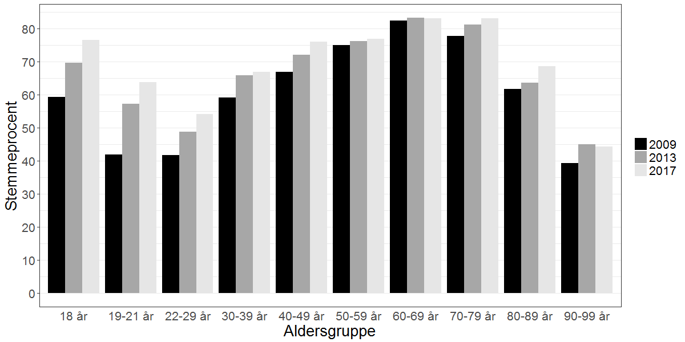
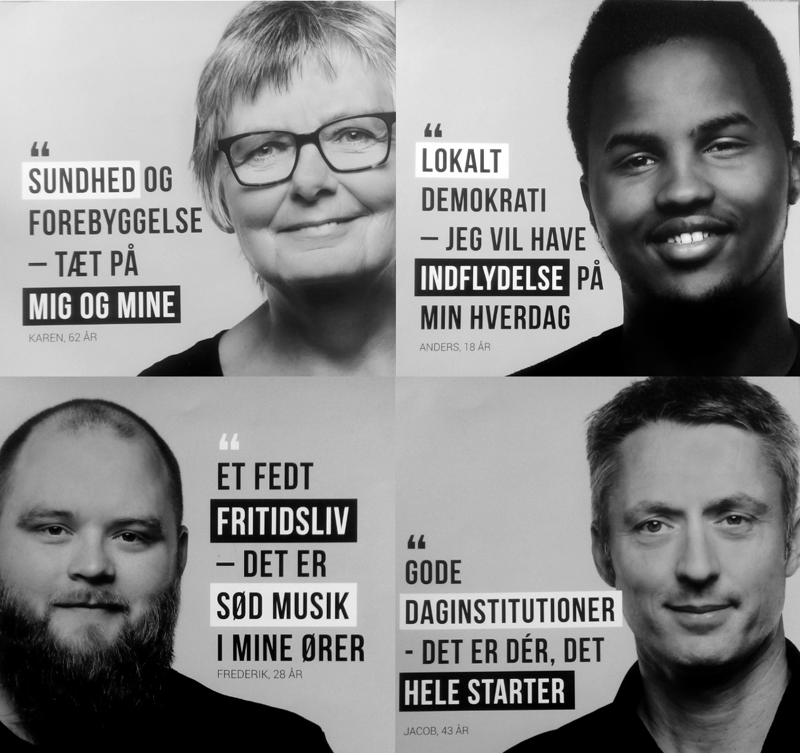
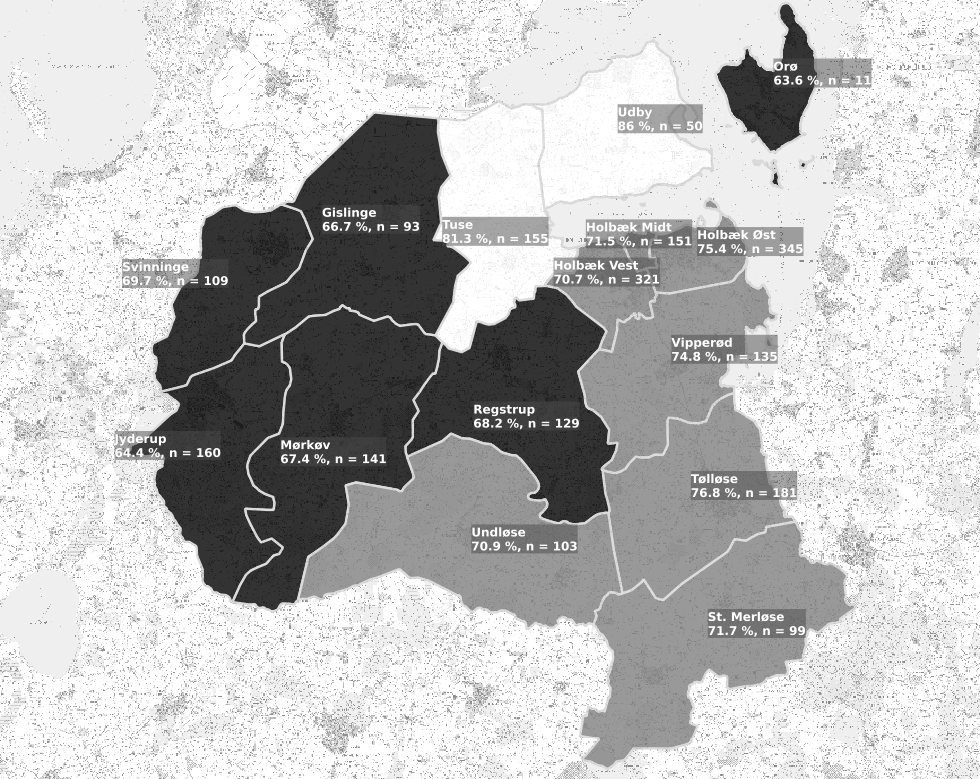
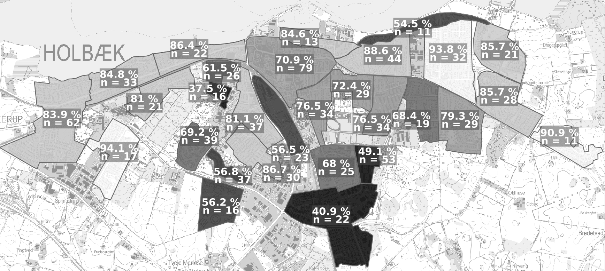
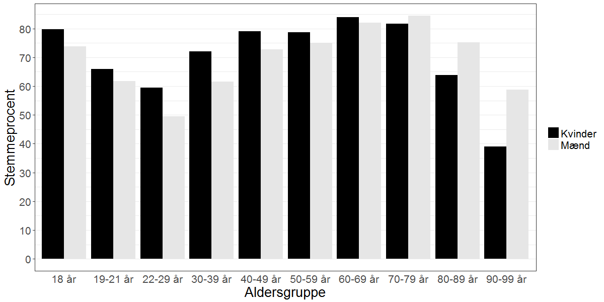
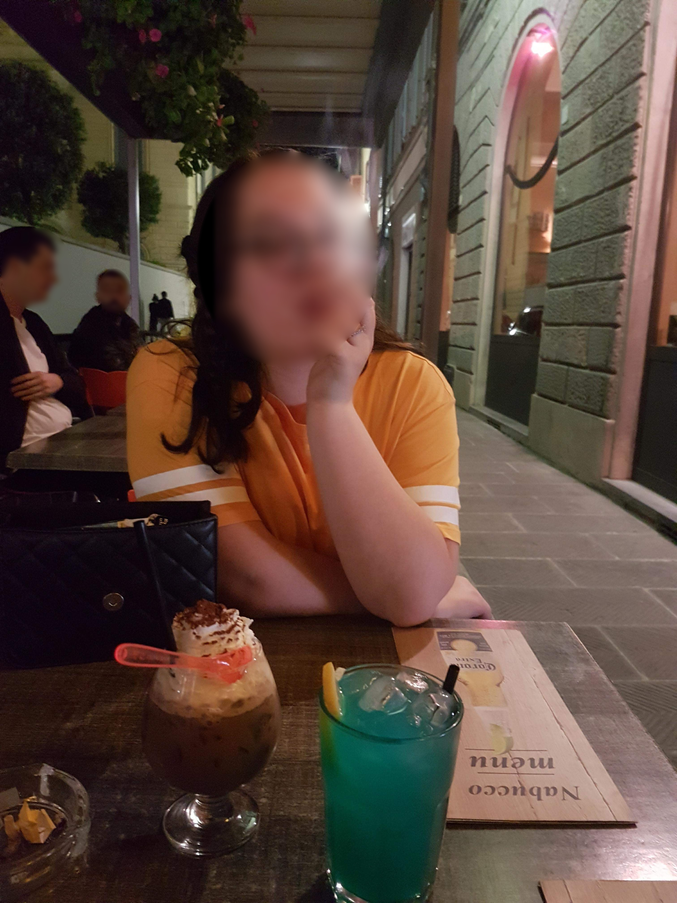
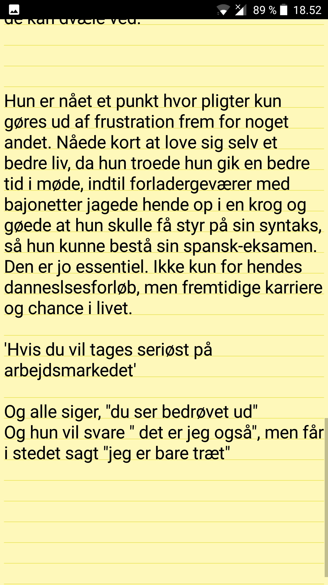

Følgegruppemøde 26. juni 2018
Forskningsspørgsmål
Overordnet spørgsmål
Hvorvidt kan unge og professionelle i det ungdoms- og fritidspædagogiske felt sammen initiere politiske dannelsesprocesser?
Underspørgsmål
- Hvordan er det ungdoms- og fritidspædagogiske felt konstitueret?
- Hvilke politiske dannelsespraksisser foregår der i det ungdoms- og fritidspædagogiske felt?
- Hvordan praktiseres det politiske i de unges livsverden?
- Hvad kan unge og professionelle lære af at deltage i politiske dannelseseksperimenter?
- Hvilke strukturelle drivkræfter og barrierer er der for politisk dannelse?
Dannelsen af de unge som vælgere
Det gik jo umiddelbart godt…

… men var valgfremme-kampagnnen udtryk for afpolitisering af valgdeltagelse og illegitimering af manglende valgdeltagelse?

Uligheden i valgdeltagelse
Holbæk Kommune



Nogle stemmer bag stemmerne
Unges politiske deltagelse som et generaliseret fænomen
Jeg hører tit i fjernsynet, at vi unge ikke interesserer os for politik. Det synes jeg personligt er en kæmpe misforståelse. Stort set alle af mine venner, også mig selv er engageret i politik og bruger lang tid af sin dag på at følge med i, hvad der sker i vores samfund og, hvad man er enig og uenig i.
Hvordan håndteres afmagt?
Hvis du virkelig ikke kan lide politik — hvis du virkelig synes at politikerne er en flok klovne, løgnere, eller at politik er kedeligt - så er det lige præcis derfor, at du skal stemme. Det her er din chance. Din chance for at ændre noget — din chance for at udnytte dit privilegium. Din chance for at udvise optimisme for fremtiden.
Det utilgængelige valg
[...] derfor vil jeg sætte mig ind i alt, hvad kommunalpolitik indebærer, hvilket parti og hvilke personer, der minder mest om mig i mine holdninger og prioriteter. Problemet, der bare hurtigt gik op for mig, at vejledende partiprogrammer og konkrete forslag er noget man skal lede længe efter, og at kommunalpolitik for en nybegynder som mig let kan være ret utilgængeligt.
Mangel på kommunalpolitisk dannelse
Det var først på gymnasiet, at jeg fik indblik i politik, som altså er noget af det væsentligste i det samfund, vi alle er en del af. Men efter kun en kort periodes samfundsfag i gymnasiet, føler jeg mig altså alligevel ikke afklaret med mit politiske ståsted. og er i stor tvivl om, hvordan jeg skal udnytte min langt om længe tildelte chance for demokratisk deltagelse den 21. november.
Opsamling
- Afpolitisering af valgdeltagelse og illegitimering af manglende valgdeltagelse som mulig eksklusion af visse positioner i det politiske rum
- Ulighed i valgdeltagelse viser forskelle i vilkårene for politisk dannelse
- Hvad er målet? En høj valgdeltagelse eller reflekterede borgerere?
Hvad kan vi gøre mere langsigtet?
Kommende aktiviteter
- Nordisk Sociologikongres
- Opsamlingsheat for interviews + analyse
- Nyt kommissorium for ungdomsbyrådet + ungdomshus
- Brugerundersøgelse i UngHolbæk, virkekæde, mv.
- Opstart af tværkommunalt netværk
- Indsats i udsatte boligområder ift. politisk dannelse?
Trailer - det politiske i de unges livsverden
3 nedslag
Et anderkendelses-værdigt formål?

Det politiske i det sociale

Hvordan politiseres unges mentale problemer?
